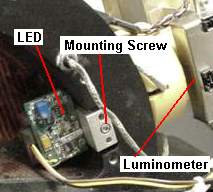

Replacing the LED Reference Assembly
This procedure describes how to replace the LED Reference assembly.
-
Replace the LED Reference assembly.
Note: LED replacement requires recalibration of all assays in use on the system.
-
Open the instrument top cover and disconnect the luminometer cables.
Note: Removing the HV power connector protects the luminometer from being saturated with stray light if it is inadvertently turned on during the installation of the LED assembly.
-
Disconnect the LED wire harness and remove the LED.

Note: The LED is located on the analytical module directly across from the luminometer and underneath the soft foam cover. -
Install the new LED.
Note: Ensure the rubber gasket is in place on the LED assembly.
- Reattach all cables.
-
Open the instrument top cover and disconnect the luminometer cables.
-
Enter the LED target value.
- In the Luminometer Diagnostics screen, select Read. Ensure that the dark count RLUs are less than 100 with all instrument covers closed.
- Enable the LED and wait 6 minutes for stabilization.
-
Use the up and down arrow keys to adjust the HV Control Voltage so the RLU counts match the last known good target value from the alignment report.
Note: If no target value is available, set the HV Control Voltage to a value that produces 1750 RLU using a Read Vessel containing 200 µL of substrate (hand dispensed) after 10 minutes incubation.
- Select Cancel to exit the LED read function. Select Save HV Control value, and then select Save LED Value.
- Press [Esc] to exit the Luminometer Diagnostics screen. At the Save alignments message, select OK.
-
Run the substrate portion of the system check and confirm the substrate RLUs are within the 5000 to 9000 RLU range.
Note: Note: If the substrate RLU mean is out of range, refer to the Decontaminating Substrate System procedure.
-
Verify system operation.
-
Perform the required system verification.
Note: Refer to the Verification of Preventive Maintenance document.
- Contact your local support organization with any questions or concerns.
-
Perform the required system verification.